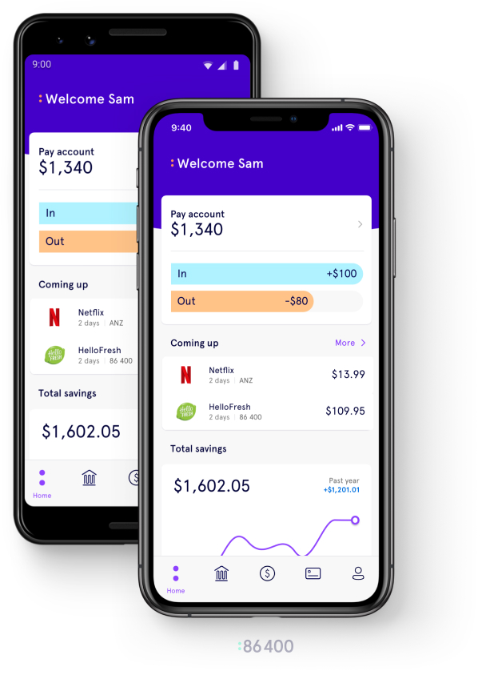

Truly native
Access the full Native SDKs on each platform, and powerful pre-built solutions for authentication and secure storage.
Our suite of developer-friendly products helps you build, secure, and deliver enterprise-grade apps on any platform—with support from the Ionic team every step of the way.
Let’s be honest. When it comes to mobile app experiences, the bar has been set high. In today’s world, people expect seamless, secure, lightning-fast apps that are fine-tuned to their particular needs. If you can’t deliver that kind of mobile app experience, you can’t expect to build out your business.
For enterprise developers aiming to deliver a seamless digital experience that follows them wherever they are, Ionic is here to help. Our powerful tools and services make it easy to deliver stunning mobile experiences across iOS, Android, and the Web—all with a single codebase that works everywhere. Move fast, spend less, create more, and build better.
Access the full Native SDKs on each platform, and powerful pre-built solutions for authentication and secure storage.
Slash your development time and costs with a platform that lets you build once and deploy anywhere.
If you know HTML, CSS, and JavaScript, you already know how to build stunning mobile apps with Ionic.
Ionic’s full-service platform allows businesses to accelerate web-based app development without having to bring in outside talent.
Leverage the power of the web to build and develop better critical apps faster with your existing web talent.
Enjoy open source benefits with the security and peace of mind from enterprise grade support and reliability.
Publish your apps with ease, deliver them continuously, and deploy live updates in minutes.
The app development industry is changing, which is why we make sure our clients are ready to change with it. A world-class app is the result of world-class products and services. See how Ionic has helped countless businesses, big and small, deliver award-winning, mission-critical apps.
Amtrak delivers a cutting-edge mobile experience to riders, while accelerating development timelines, reducing risk, and improving operational agility.
Our Articles, Webinars, and Case Studies give you the education and insights you need to succeed with Ionic.
Live and recorded tech talks, product demos, and deep dives with industry experts.
Timely perspectives on industry news, product updates, and competitive comparisons.
Real customers, in their own words, on why they chose Ionic and what it’s meant for them.
Watch recorded demos, conference talks, deep dive trainings and more.